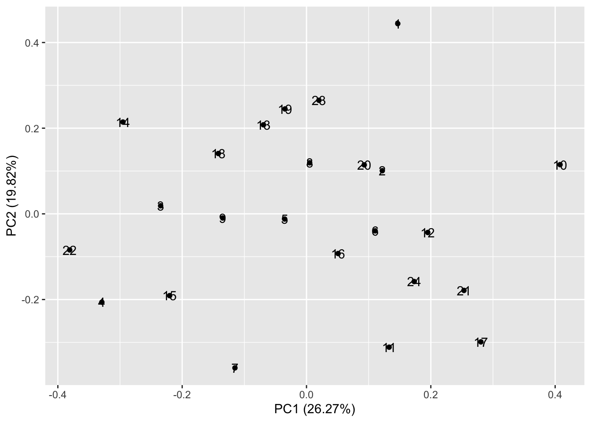
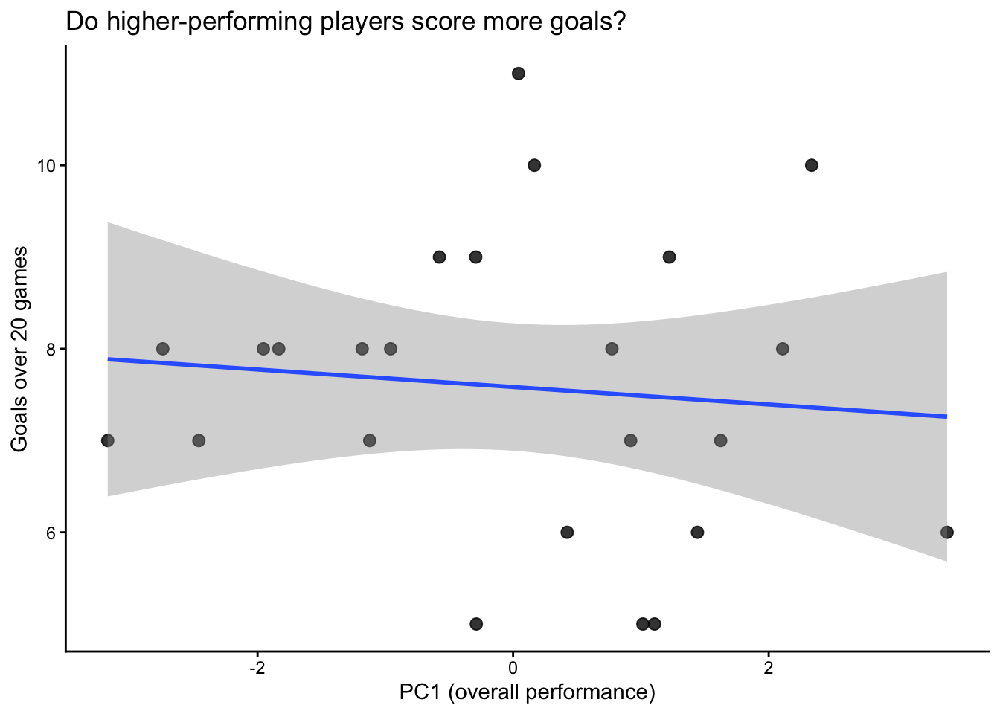

1 PCA and Factor Analysis
This tutorial uses football-player performance data from Wilson et al. (2017), Skill not athleticism predicts individual variation in match performance of soccer players. The study measured semi-professional football players from the University of Queensland Football Club and asked whether morphology, balance, athleticism and motor skill predicted performance in soccer-tennis and 11-a-side matches.
In the paper, the authors measured:
- Balance: average time before losing balance while standing on high-density foam with eyes closed.
- Athletic performance: 1500 m speed, wall-squat endurance, jump distance, 40 m sprint speed and agility-course speed.
- Motor skill: dribbling speed, juggling ability, volley accuracy, passing accuracy and heading accuracy.
The key biological question is whether complex match performance is better explained by general athletic capacity or football-specific motor skill.
We are going to use principal components analysis and factor analysis to interpret the multivariate structure of these player performance traits.
1.1 Setup
Load these packages to make the plots look better:
1.2 Load the data
First open the player performance dataset. The CSV file is saved in the data folder.
Later in the tutorial, we will also use a second independent dataset, football_goals_20_games_24_players.csv, to practise prediction using regression.
Check the variable names:
[1] "player" "balance" "X1500m" "squat" "jump" "sprint" "agility"
[8] "drib" "jugg" "voll" "pass" "head" Because R changes column names that begin with a number, 1500m may appear as X1500m.
player balance X1500m squat jump sprint agility drib jugg
1 1 6.485 4.297994 361 2.67 7.272727 3.601286 2.545455 14.80000
2 2 25.000 4.602194 100 2.55 7.214200 3.530339 2.554162 26.50000
3 3 3.920 3.916449 87 2.51 6.430868 3.412034 2.471042 10.11111
4 4 20.000 3.605769 85 2.36 6.700168 3.227666 2.175814 14.50000
5 5 46.700 4.065041 141 2.52 6.920415 3.446154 2.471042 8.40000
6 6 60.000 3.778338 172 2.53 6.666667 3.530339 2.621416 21.15385
voll pass head
1 11.76471 20.40816 15.15152
2 11.00000 31.40816 14.49275
3 11.76471 17.85714 14.49275
4 12.80855 18.87122 13.70566
5 10.73989 21.81725 16.55008
6 11.62791 24.39024 15.38462'data.frame': 24 obs. of 12 variables:
$ player : int 1 2 3 4 5 6 7 8 9 10 ...
$ balance: num 6.49 25 3.92 20 46.7 ...
$ X1500m : num 4.3 4.6 3.92 3.61 4.07 ...
$ squat : int 361 100 87 85 141 172 80 216 81 189 ...
$ jump : num 2.67 2.55 2.51 2.36 2.52 2.53 2.19 2.38 2.42 2.72 ...
$ sprint : num 7.27 7.21 6.43 6.7 6.92 ...
$ agility: num 3.6 3.53 3.41 3.23 3.45 ...
$ drib : num 2.55 2.55 2.47 2.18 2.47 ...
$ jugg : num 14.8 26.5 10.1 14.5 8.4 ...
$ voll : num 11.8 11 11.8 12.8 10.7 ...
$ pass : num 20.4 31.4 17.9 18.9 21.8 ...
$ head : num 15.2 14.5 14.5 13.7 16.6 ...1.3 Description of the variables
player balance X1500m squat
Min. : 1.00 Min. : 3.92 Min. :3.606 Min. : 79.00
1st Qu.: 6.75 1st Qu.:12.00 1st Qu.:3.940 1st Qu.: 84.75
Median :12.50 Median :22.92 Median :4.364 Median :103.00
Mean :12.50 Mean :25.48 Mean :4.283 Mean :131.50
3rd Qu.:18.25 3rd Qu.:34.99 3rd Qu.:4.549 3rd Qu.:166.00
Max. :24.00 Max. :60.00 Max. :4.854 Max. :361.00
jump sprint agility drib
Min. :2.050 Min. :6.231 Min. :3.228 Min. :2.176
1st Qu.:2.360 1st Qu.:6.650 1st Qu.:3.379 1st Qu.:2.504
Median :2.465 Median :6.932 Median :3.497 Median :2.548
Mean :2.439 Mean :6.889 Mean :3.466 Mean :2.553
3rd Qu.:2.535 3rd Qu.:7.175 3rd Qu.:3.545 3rd Qu.:2.632
Max. :2.720 Max. :7.491 Max. :3.666 Max. :2.784
jugg voll pass head
Min. : 7.842 Min. : 7.804 Min. :10.81 Min. : 4.182
1st Qu.:10.659 1st Qu.: 9.501 1st Qu.:20.41 1st Qu.:14.296
Median :14.082 Median :11.250 Median :28.67 Median :15.268
Mean :15.900 Mean :11.017 Mean :29.77 Mean :14.973
3rd Qu.:18.990 3rd Qu.:12.544 3rd Qu.:38.00 3rd Qu.:17.712
Max. :39.857 Max. :13.889 Max. :50.00 Max. :19.231 The variables are:
balance: static balance scoreX1500m: speed over 1500 msquat: wall-squat endurance timejump: standing jump distancesprint: 40 m sprint speedagility: speed through an agility coursedrib: dribbling speed through an agility coursejugg: juggling or keep-up abilityvoll: volley-kick accuracypass: passing accuracyhead: heading accuracy
Higher values generally indicate better performance on that trait.
1.4 Correlation matrix
Let’s first do a correlation matrix. We exclude the player ID column and analyse the performance traits only.
balance X1500m squat jump sprint
balance 1.000000000 -0.120666590 0.056071952 0.005165273 0.14975877
X1500m -0.120666590 1.000000000 0.159548821 0.096566292 0.34226606
squat 0.056071952 0.159548821 1.000000000 0.432157704 0.30883252
jump 0.005165273 0.096566292 0.432157704 1.000000000 0.33871992
sprint 0.149758766 0.342266059 0.308832520 0.338719924 1.00000000
agility -0.229848417 0.168169479 0.445175401 0.571266808 0.16286933
drib 0.470845996 0.356356256 0.159653733 0.154769848 0.29294354
jugg 0.187921370 0.155839614 0.004928929 0.280997027 -0.07650198
voll 0.397624644 0.006100075 0.153281966 0.025642532 0.32241412
pass 0.416714230 0.155833542 -0.042274047 -0.006327859 0.25026128
head -0.006255931 0.032500939 0.122024732 0.081488984 -0.10767999
agility drib jugg voll pass
balance -0.22984842 0.47084600 0.187921370 0.397624644 0.416714230
X1500m 0.16816948 0.35635626 0.155839614 0.006100075 0.155833542
squat 0.44517540 0.15965373 0.004928929 0.153281966 -0.042274047
jump 0.57126681 0.15476985 0.280997027 0.025642532 -0.006327859
sprint 0.16286933 0.29294354 -0.076501981 0.322414125 0.250261285
agility 1.00000000 0.02135601 0.185489117 -0.303537885 -0.015220367
drib 0.02135601 1.00000000 0.346830908 0.313925571 0.507806703
jugg 0.18548912 0.34683091 1.000000000 0.107128520 0.112221815
voll -0.30353789 0.31392557 0.107128520 1.000000000 0.530011484
pass -0.01522037 0.50780670 0.112221815 0.530011484 1.000000000
head 0.36781797 0.07426933 0.235577420 0.394861742 0.341212829
head
balance -0.006255931
X1500m 0.032500939
squat 0.122024732
jump 0.081488984
sprint -0.107679989
agility 0.367817975
drib 0.074269329
jugg 0.235577420
voll 0.394861742
pass 0.341212829
head 1.000000000A correlation matrix lets us see which traits tend to vary together. For example, if several skill traits are positively correlated, this suggests that some players have generally high technical ability across multiple football-specific tasks.
1.5 Bartlett’s Test of Sphericity
Now we can do Bartlett’s Test of Sphericity. This test compares the correlation matrix to an identity matrix. If it is significant, it is worth doing a PCA.
✔ The Bartlett's test of sphericity was significant at an alpha level of .05.
These data are probably suitable for factor analysis.
𝜒²(55) = 81.19, p = 0.012A significant result means the variables are sufficiently correlated for a dimension-reduction method such as PCA or factor analysis.
1.6 Principal Components Analysis
Note: to make this a PCA based on a correlation matrix, we have to scale the variables, hence scale = TRUE. There are two main principal components functions, but they are very similar. Note prcomp calls the loadings “rotations”, not to be confused with rotations below.
Importance of components:
PC1 PC2 PC3 PC4 PC5 PC6 PC7
Standard deviation 1.6999 1.4767 1.1795 1.0726 1.02453 0.80985 0.79892
Proportion of Variance 0.2627 0.1982 0.1265 0.1046 0.09542 0.05962 0.05803
Cumulative Proportion 0.2627 0.4609 0.5874 0.6920 0.78742 0.84704 0.90507
PC8 PC9 PC10 PC11
Standard deviation 0.60575 0.55566 0.52948 0.29702
Proportion of Variance 0.03336 0.02807 0.02549 0.00802
Cumulative Proportion 0.93842 0.96649 0.99198 1.00000Importance of components:
Comp.1 Comp.2 Comp.3 Comp.4 Comp.5
Standard deviation 1.6999027 1.4766764 1.1794865 1.0726210 1.02452713
Proportion of Variance 0.2626972 0.1982339 0.1264717 0.1045924 0.09542326
Cumulative Proportion 0.2626972 0.4609311 0.5874028 0.6919951 0.78741840
Comp.6 Comp.7 Comp.8 Comp.9 Comp.10
Standard deviation 0.80984729 0.7989246 0.6057459 0.55566144 0.52948396
Proportion of Variance 0.05962297 0.0580255 0.0333571 0.02806906 0.02548666
Cumulative Proportion 0.84704137 0.9050669 0.9384240 0.96649302 0.99197968
Comp.11
Standard deviation 0.297024364
Proportion of Variance 0.008020316
Cumulative Proportion 1.000000000The first principal component describes the major axis of variation among players. In the Wilson et al. paper, separate PCAs were used to summarise athletic performance and motor skill. Here, we are doing one combined PCA across balance, athletic performance and motor skill traits, so the first few components may separate general performance, athleticism and football-specific skill.
1.7 Loadings
Let’s look at the loadings. Called “rotations” in prcomp and “loadings” in princomp. They are the Pearson’s correlation between that variable and that Principal Component.
Standard deviations (1, .., p=11):
[1] 1.6999027 1.4766764 1.1794865 1.0726210 1.0245271 0.8098473 0.7989246
[8] 0.6057459 0.5556614 0.5294840 0.2970244
Rotation (n x k) = (11 x 11):
PC1 PC2 PC3 PC4 PC5 PC6
balance 0.2936386 -0.35087385 -0.05458821 -0.01236935 -0.50256454 0.22417684
X1500m 0.2299058 0.15552197 -0.28197657 -0.42123014 0.58080664 -0.18787938
squat 0.2547779 0.35550940 -0.14404714 0.34331707 -0.16954618 -0.19781100
jump 0.2656109 0.43501720 -0.01783357 0.04579993 -0.35433245 -0.03857511
sprint 0.3261362 0.10208432 -0.52353137 0.20056752 0.10706161 -0.05512777
agility 0.1673372 0.55847807 0.21211288 0.02473830 0.03452894 0.42295776
drib 0.4327319 -0.14166176 -0.12392103 -0.36532953 -0.05741543 0.19918699
jugg 0.2447494 0.06217972 0.37349976 -0.55564980 -0.25869776 -0.42767336
voll 0.3619836 -0.32312886 0.07293446 0.39291316 0.07224943 -0.49119815
pass 0.3945243 -0.28979483 0.10341401 0.06052617 0.23371625 0.47674183
head 0.2392728 0.04926387 0.63756754 0.24769351 0.33626830 -0.02753477
PC7 PC8 PC9 PC10 PC11
balance 0.20538168 -0.54118171 0.365326098 -0.12428219 -0.02713210
X1500m 0.18718969 -0.15409295 0.479562718 -0.01307712 -0.06663040
squat 0.65671346 0.09650932 -0.081047782 0.33932493 0.19978295
jump -0.42236751 0.37267671 0.478977025 -0.18468479 0.17304917
sprint -0.42420682 -0.39669448 -0.404284981 -0.05135179 0.22582954
agility -0.01039040 -0.22522259 -0.142378623 0.02285589 -0.60231545
drib 0.25091726 0.42491622 -0.384734195 -0.45697622 -0.02280376
jugg -0.15523189 -0.17263458 -0.237654632 0.35303879 0.05601670
voll -0.10513326 0.15078192 0.048968103 -0.04463885 -0.56584548
pass -0.17259657 0.22907881 0.099702647 0.59253599 0.14422004
head 0.07178534 -0.20375286 -0.003474513 -0.38133775 0.40809767
Loadings:
Comp.1 Comp.2 Comp.3 Comp.4 Comp.5 Comp.6 Comp.7 Comp.8 Comp.9 Comp.10
balance 0.294 0.351 0.503 0.224 0.205 0.541 0.365 0.124
X1500m 0.230 -0.156 0.282 0.421 -0.581 -0.188 0.187 0.154 0.480
squat 0.255 -0.356 0.144 -0.343 0.170 -0.198 0.657 -0.339
jump 0.266 -0.435 0.354 -0.422 -0.373 0.479 0.185
sprint 0.326 -0.102 0.524 -0.201 -0.107 -0.424 0.397 -0.404
agility 0.167 -0.558 -0.212 0.423 0.225 -0.142
drib 0.433 0.142 0.124 0.365 0.199 0.251 -0.425 -0.385 0.457
jugg 0.245 -0.373 0.556 0.259 -0.428 -0.155 0.173 -0.238 -0.353
voll 0.362 0.323 -0.393 -0.491 -0.105 -0.151
pass 0.395 0.290 -0.103 -0.234 0.477 -0.173 -0.229 -0.593
head 0.239 -0.638 -0.248 -0.336 0.204 0.381
Comp.11
balance
X1500m
squat -0.200
jump -0.173
sprint -0.226
agility 0.602
drib
jugg
voll 0.566
pass -0.144
head -0.408
Comp.1 Comp.2 Comp.3 Comp.4 Comp.5 Comp.6 Comp.7 Comp.8 Comp.9
SS loadings 1.000 1.000 1.000 1.000 1.000 1.000 1.000 1.000 1.000
Proportion Var 0.091 0.091 0.091 0.091 0.091 0.091 0.091 0.091 0.091
Cumulative Var 0.091 0.182 0.273 0.364 0.455 0.545 0.636 0.727 0.818
Comp.10 Comp.11
SS loadings 1.000 1.000
Proportion Var 0.091 0.091
Cumulative Var 0.909 1.000Interpretation:
- Variables with large positive or negative loadings contribute strongly to that component.
- If all traits load in the same direction on PC1, PC1 can be interpreted as general player performance.
- If athletic traits load in one direction and skill traits load in another, the component may represent a contrast between athletic capacity and football-specific skill.
1.8 Screeplot
To do a screeplot, follow the commands below. Note this is the standard deviations, which are just square root of the variances or eigenvalues.
The screeplot helps decide how many components are worth interpreting. A common rule of thumb is to keep components before the curve flattens out.
1.9 Principal Component Scores
To get your principal components scores for plotting and analysis, do the following:
PC1 PC2 PC3 PC4 PC5 PC6
[1,] 1.22265294 3.21272139 -0.84513278 1.729875647 -0.41800665 -1.16536979
[2,] 1.01549076 0.72909627 -0.07487739 -1.126299782 0.08030236 -0.44330634
[3,] -1.95431230 0.13616424 0.62019420 0.683133943 -0.08692596 -0.65692178
[4,] -2.74171773 -1.49202883 0.50124852 1.735454370 -0.78052160 -1.85418850
[5,] -0.29218316 -0.08747326 -0.11988125 1.108831773 -0.99391905 0.32842292
[6,] 0.91997987 -0.28734416 0.84641464 0.232906297 -2.57193000 0.29232622
[7,] -0.95858539 -2.60131264 1.43635426 0.990763299 0.22009132 0.24168604
[8,] 0.04244428 0.86220012 -1.13368412 0.678632536 -0.23885615 0.30250751
[9,] -1.12244287 -0.06955280 1.12603291 0.288229193 -0.12664793 1.91010162
[10,] 3.39686967 0.83136647 -0.43475555 1.121845842 0.67921147 0.65544911
[11,] 1.10678403 -2.25184331 -2.80892930 -1.372109965 -1.76088086 0.26168616
[12,] 1.62463419 -0.31440598 -0.62813600 -0.915492585 -0.10688046 -1.21576231
[13,] -0.57673686 1.50371749 1.09522239 0.357669243 -0.40536591 1.07877742
[14,] -2.45940301 1.55096778 -1.73104596 -0.815402453 0.44465656 -0.23066431
[15,] -1.83385997 -1.38084282 -0.43730279 -0.678128599 0.95811502 0.19042700
[16,] 0.42353253 -0.66991754 0.33476898 1.159555934 1.82618886 0.02417214
[17,] 2.33632926 -2.16227916 -0.18130741 -0.003407567 0.72452040 0.03044801
[18,] -1.18106445 1.01946486 -1.42004479 0.469515124 -0.72656471 0.99789886
[19,] -0.28781540 1.77196130 0.32939063 -1.408868336 0.66689434 -0.33260253
[20,] 0.77348049 0.82720824 3.03423799 -2.239773715 -1.30000966 -0.51164628
[21,] 2.10946365 -1.29318452 0.20187351 0.034487363 0.57647043 0.44954616
[22,] -3.17285972 -0.60941350 -0.65733911 -1.356394009 0.79164937 0.24990229
[23,] 0.16649597 1.91778410 0.60759087 -0.489210312 1.41139229 0.25681745
[24,] 1.44282322 -1.14305374 0.33910755 -0.185813240 1.13701651 -0.85970707
PC7 PC8 PC9 PC10 PC11
[1,] 1.06626147 0.74992918 -0.609228418 0.46483136 0.17305201
[2,] -1.09718405 -0.55422064 0.020706681 0.30612703 -0.11318983
[3,] -0.48184786 1.35102821 0.176215524 -0.67519862 -0.43378351
[4,] -1.06403599 -0.28180079 0.378695770 0.62881031 0.21732729
[5,] 0.19619194 -0.83106823 0.854657258 -0.89586615 0.36499683
[6,] 0.70036296 -0.63152387 0.184658562 -0.46021429 -0.40732572
[7,] 0.47708118 0.29020781 -0.199234399 -0.10259401 0.08118763
[8,] 1.15124813 -0.95643173 -0.276070905 -0.34757651 0.10353943
[9,] -0.72084050 0.16806957 0.038709675 1.07069258 0.30262699
[10,] -0.65278915 0.16655620 0.932371171 0.05236096 -0.10214435
[11,] -0.12849364 0.55873899 0.297675862 0.89339944 -0.12124663
[12,] 0.78971314 0.03142220 -0.228192952 0.24684205 0.39712028
[13,] 0.84348491 0.35975295 -0.505277549 0.58132253 -0.50547940
[14,] -0.33609876 -0.32114157 0.801087448 -0.11434646 -0.54458835
[15,] 0.95117438 -0.59904114 -0.831463657 0.01884134 -0.16940143
[16,] 0.03885635 -1.02979447 -0.006515691 0.66914191 -0.25696656
[17,] -0.25250279 -0.04466779 -0.360784257 -0.27940159 0.17394913
[18,] -1.68675889 0.24054300 -1.225329831 -0.62610765 0.31313624
[19,] -0.98192696 -0.61152963 -0.431957026 -0.35399954 0.06783876
[20,] -0.05633572 -0.03278367 -0.008561725 0.05457287 0.13508982
[21,] 0.02130256 0.74598418 0.172521694 -0.78114525 -0.03614367
[22,] 1.20492210 0.59954232 0.449245111 -0.24242268 0.33615101
[23,] 0.36131351 0.36550291 0.878867693 0.12037610 0.36393275
[24,] -0.34309832 0.26672601 -0.502796039 -0.22844571 -0.33967872So to combine them with the original variables, do this:
Each player now has a score on each principal component. These scores tell us where each player sits on the multivariate axes of football performance.
1.10 Biplot
We can produce a biplot in ggplot2. Here the player number is used as a label.
Warning: `aes_string()` was deprecated in ggplot2 3.0.0.
ℹ Please use tidy evaluation idioms with `aes()`.
ℹ See also `vignette("ggplot2-in-packages")` for more information.
ℹ The deprecated feature was likely used in the ggfortify package.
Please report the issue at <https://github.com/sinhrks/ggfortify/issues>.
We could add the loadings, but they can be a bit messy. It is often best to look at the loadings or rotations tables directly.
You can make the plot using different symbols, change background etc through reading the ggplot2 documentation.
1.11 Regression: Goals vs PCA
We now use a simple regression to link the PCA results to an outcome variable.
We will relate goals scored over 20 games to the first principal component (PC1), which represents overall performance.
Read in the goals dataset:
For simplicity, we will match players by row order and combine the goals dataset with the PCA scores. We avoid using the object name data, because data() is also a built-in R function.
[1] 24[1] 24Simple regression: Goals vs PC1
Call:
lm(formula = goals_20_games ~ PC1, data = combined)
Residuals:
Min 1Q Median 3Q Max
-2.6108 -0.9792 0.1929 0.8037 3.4207
Coefficients:
Estimate Std. Error t value Pr(>|t|)
(Intercept) 7.58333 0.33493 22.642 <2e-16 ***
PC1 -0.09529 0.20127 -0.473 0.641
---
Signif. codes: 0 '***' 0.001 '**' 0.01 '*' 0.05 '.' 0.1 ' ' 1
Residual standard error: 1.641 on 22 degrees of freedom
Multiple R-squared: 0.01009, Adjusted R-squared: -0.03491
F-statistic: 0.2241 on 1 and 22 DF, p-value: 0.6406Interpretation:
- The response variable is
goals_20_games - The predictor is
PC1 - A positive relationship means players with higher overall performance (PC1) score more goals
Scatterplot
`geom_smooth()` using formula = 'y ~ x'
Interpretation:
- Each point is a player
- Points close together have similar performance and goal output
- The slope shows whether better overall players tend to score more goals
Key point
This links PCA to prediction:
- PCA identifies the main performance axis (PC1)
- Regression tests whether that axis predicts goals
1.12 Factor Analysis with Varimax Rotation
To do a Varimax rotation on your principal components, follow these commands. Do a factor analysis with the rotation being Varimax.
Here we start with three factors because the paper describes three broad biological domains: balance, athletic performance and motor skill.
Call:
factanal(x = players[, 2:12], factors = 3, rotation = "varimax")
Uniquenesses:
balance X1500m squat jump sprint agility drib jugg voll pass
0.722 0.920 0.656 0.524 0.504 0.005 0.706 0.913 0.171 0.607
head
0.005
Loadings:
Factor1 Factor2 Factor3
balance 0.524
X1500m 0.105 0.261
squat 0.112 0.567 0.102
jump 0.687
sprint 0.441 0.525 -0.158
agility -0.444 0.801 0.395
drib 0.468 0.273
jugg 0.168 0.226
voll 0.849 0.322
pass 0.538 0.133 0.292
head 0.993
Factor1 Factor2 Factor3
SS loadings 1.935 1.905 1.427
Proportion Var 0.176 0.173 0.130
Cumulative Var 0.176 0.349 0.479
Test of the hypothesis that 3 factors are sufficient.
The chi square statistic is 19.84 on 25 degrees of freedom.
The p-value is 0.755 The rotated factor loadings may help identify clusters of variables. For example:
- one factor may represent athletic performance
- one factor may represent football-specific motor skill
- one factor may represent balance or a narrower technical component
Try changing the number of factors and compare whether the interpretation becomes clearer or less clear:
Call:
factanal(x = players[, 2:12], factors = 2, rotation = "varimax")
Uniquenesses:
balance X1500m squat jump sprint agility drib jugg voll pass
0.669 0.932 0.747 0.633 0.805 0.005 0.629 0.894 0.359 0.497
head
0.712
Loadings:
Factor1 Factor2
balance 0.573
X1500m 0.133 0.224
squat 0.497
jump 0.606
sprint 0.336 0.286
agility -0.320 0.945
drib 0.570 0.216
jugg 0.194 0.262
voll 0.799
pass 0.677 0.212
head 0.253 0.473
Factor1 Factor2
SS loadings 2.09 2.027
Proportion Var 0.19 0.184
Cumulative Var 0.19 0.374
Test of the hypothesis that 2 factors are sufficient.
The chi square statistic is 33.83 on 34 degrees of freedom.
The p-value is 0.476
Call:
factanal(x = players[, 2:12], factors = 4, rotation = "varimax")
Uniquenesses:
balance X1500m squat jump sprint agility drib jugg voll pass
0.677 0.839 0.618 0.511 0.521 0.005 0.005 0.815 0.005 0.555
head
0.101
Loadings:
Factor1 Factor2 Factor3 Factor4
balance 0.423 0.367
X1500m 0.167 0.364
squat 0.602
jump 0.686 0.117
sprint 0.338 0.541 0.150 -0.220
agility -0.485 0.747 0.116 0.434
drib 0.291 0.950
jugg 0.353 0.229
voll 0.966 0.235
pass 0.465 0.394 0.264
head 0.176 0.929
Factor1 Factor2 Factor3 Factor4
SS loadings 1.804 1.742 1.510 1.293
Proportion Var 0.164 0.158 0.137 0.118
Cumulative Var 0.164 0.322 0.460 0.577
Test of the hypothesis that 4 factors are sufficient.
The chi square statistic is 9.89 on 17 degrees of freedom.
The p-value is 0.908 1.13 Final interpretation
Wilson et al. found that motor skill was a stronger predictor of soccer-tennis and 11-a-side match performance than general athleticism. In this tutorial, PCA and factor analysis are used to explore the same biological idea from the trait data: whether football players vary mostly along a general performance axis, or whether athletic and technical skill traits form separate multivariate dimensions.
The independent goals dataset then extends the tutorial into prediction. Instead of asking only how traits group together, the regression asks whether a player’s score on the main PCA axis predicts goals scored over 20 games.